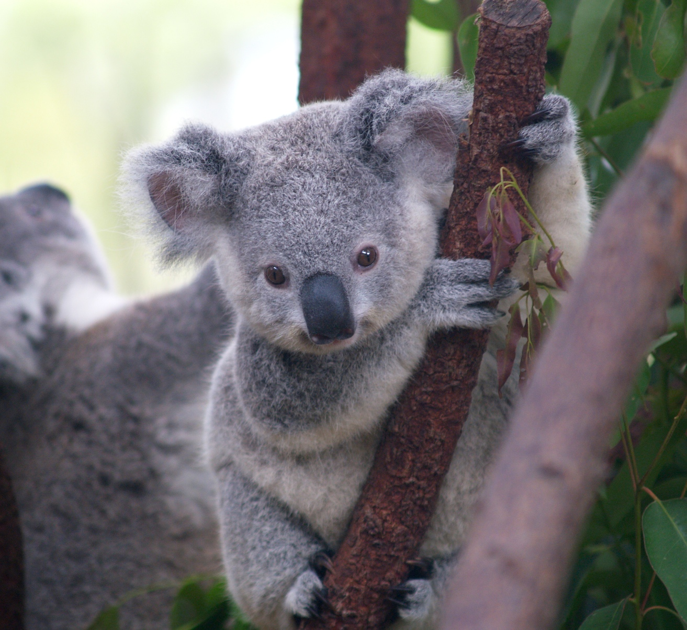

My Projects/Works

This is Koala.
koala is a tree-dwelling marsupial of coastal eastern and southern Australia classified in the family Phascolarctidae. It feeds on leaves of certain eucalyptus trees, has an intestinal pouch to digest toxic substances abundant in eucalyptus, spends long hours sitting or sleeping in tree forks.